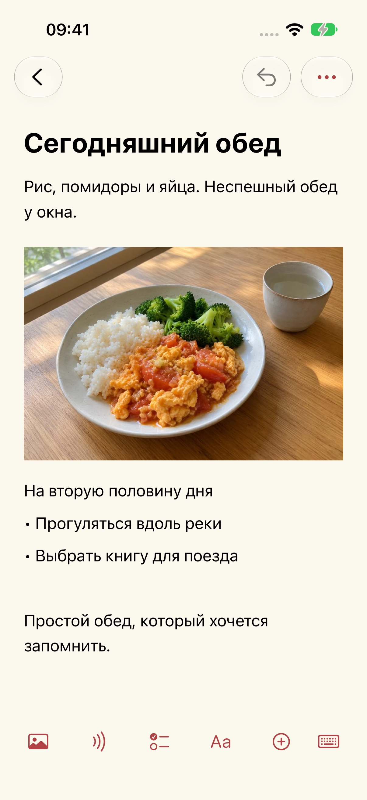
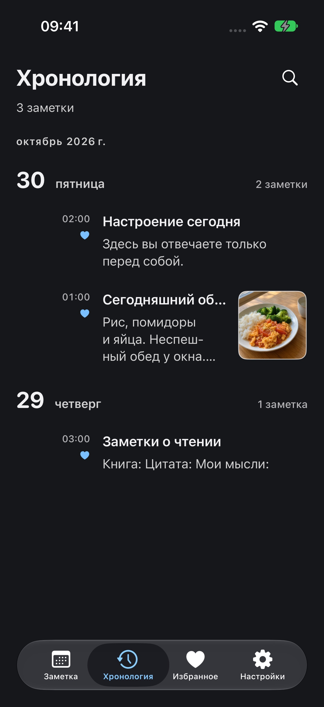

Помощь и поддержка
Обновлено: 2026-10-29
Почему я сделал Mowyns
Я долго искал простой, удобный и полностью бесплатный инструмент для записей, но так и не нашёл подходящий. Поэтому сделал Mowyns — и сам пользуюсь им каждый день.
У каждого дня своя страница
Мне хотелось открывать блокнот и видеть сегодняшний день. Календарь показывает записи выбранной даты, поэтому вчерашние заметки остаются во вчера. Чтобы вернуться к ним, выберите дату или пролистайте хронологию. Старые записи сохраняются, а у нового дня остаётся своё пространство.




Заметка
Сфотографируйте обед и добавьте несколько слов. Запишите, что хочется сделать. Текст, фотографии и аудиозаписи могут находиться в одной заметке.
Дата
Перед поездкой сохраните сведения о поезде, номера мест, снимки билетов и интересные места на соответствующие даты. Когда день наступит, откройте его — план уже будет под рукой. Записи за несколько дней сложатся в простой маршрут.
Календарь
Вверху списка за день потяните вниз один раз, чтобы увидеть календарь, и ещё раз, чтобы открыть быстрый поиск. Когда календарь свёрнут, смахните заголовок с датой влево или вправо для перехода к следующему или предыдущему дню.
Оформление
Выберите цвет темы и светлое или тёмное оформление. Настройте размер текста и межстрочный интервал.
Новая заметка
Выберите «Новая заметка», введите заголовок и текст. На нижней панели редактора можно добавить изображения, аудио, списки, таблицы и файлы.
Копии и перенос
Заметки сохраняются на устройстве. Откройте «Настройки → Управление данными → Копии и перенос» для экспорта или импорта обычной либо зашифрованной копии. Храните свои резервные копии: автоматической синхронизации нет.
Расшифровка записи
Приложение запрашивает доступ к камере или микрофону только при съёмке, сканировании или записи. Фото и файлы вы выбираете через системные окна. Отказ в этих разрешениях не мешает создавать текстовые заметки. Для расшифровки нужно системное разрешение на распознавание речи. Она выполняется только на устройстве. Если устройство или язык не поддерживаются, аудио сохраняется, а расшифровка отмечается как недоступная. Приложение не переключается на облачное распознавание. Разрешения можно отозвать в системных настройках.
Недавно удалённые
Откройте «Настройки → Управление данными → Недавно удалённые», чтобы восстановить заметку. После окончательного удаления нужна ранее экспортированная резервная копия. У разработчика нет копии ваших заметок.